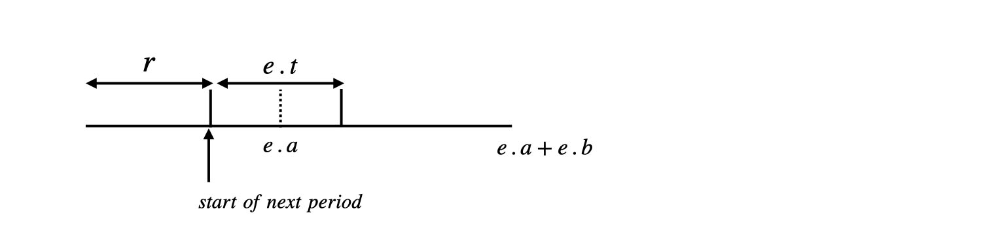

这篇博文主要讲述了最短路算法中
隐式图Dijkstra 隐式图Dijkstra \text{Dijkstra} Dijkstra Dijkstra \text{Dijkstra} Dijkstra ∀ u ∈ V ( G ) , u \forall u \in V(G), u ∀ u ∈ V ( G ) , u
algorithm \textbf{algorithm} algorithm u(state, dist) \textbf{u(state,} \ \textbf{dist)} u(state, dist)
get start status \text{get start status} get start status que ← st(stateCode, 0) \text{que}\leftarrow\text{st(stateCode, 0)} que ← st(stateCode, 0) while(que.size()) \textbf{while(que.size())} while(que.size()) get u = que.front(), que.pop() \text{get u = que.front(), que.pop()} get u = que.front(), que.pop() if u = endState, return D(u) \text{if u = endState, return } \textbf{D(u)} if u = endState, return D(u)
for ∀ i ∈ candidates \textbf{for} \ \forall i \in \text{candidates} for ∀ i ∈ candidates ~~~~~~ check ( e d g e s ( i ) ) is available? \text{check}(edges(i)) \text{ is available?} check ( e d g e s ( i ) ) is available? ~~~~~~ if(check == false and not available) c o n t i n u e \text{if(check == false and not available) } continue if(check == false and not available) c o n t i n u e ~~~~~~ get v(newState , u.dist + e(u, v)) \text{get } \textbf{v(newState} \ \textbf{,} \ \textbf{u.dist} \ + \textbf{e(u,} \ \textbf{v))} get v(newState , u.dist + e(u, v)) ~~~~~~ sometimes change v.state \text{sometimes change v.state} sometimes change v.state ~~~~~~ D ( v ) = min ( D ( v ) , v . d i s t ) D(v) = \min(D(v), v.dist) D ( v ) = min ( D ( v ) , v . d i s t ) ~~~~~~ ~~~~ if changed, que.push ( v ) \text{if changed, que.push}(v) if changed, que.push ( v )
1 2 3 4 5 6 7 8 9 10 11 12 13 14 15 16 17 18 19 20 21 22 23 24 25 26 27 28 29 30 31 32 33 34 35 36 37 38 39 40 41 42 43 44 45 46 47 48 49 50 51 52 53 54 55 56 57 58 59 60 61 62 63 64 65 66 67 68 69 70 71 72 73 74 75 76 77 78 79 80 81 82 83 84 const int maxn = 20; const int maxm = 100 + 5; const int inf = 0x3f3f3f3f; int T[maxm]; int n, m; // == node definition == class Node { public: int state, dist; bool operator< (const Node& rhs) const { return dist > rhs.dist; } Node Node(int s, int d) : state(s), dist(d) {} }; int D[1<<maxn], vis[1<<maxn ]; char before[maxm][maxn], after[maxm][maxn]; void initG Set(D, inf); Set(vis, 0); } // == node finished == // == Dijkstra == bool valid(const Node& u, const int k) { // check before patches k _for(i, 0, n) { if (before[k][i] == '-' && ((1<<i) & u.state)) return false; if(before[k][i ] == '+' && !((1<<i) & u.state)) return false; } return true; } int dijkstra() { priority_queue<Node> que; Node st((1<<n)-1, 0); que.push(st); D[st.state] = 0; while (!que.empty()) { Node x = que.top(); que.pop(); if(x.state == 0) return D[x.state]; if(vis[x.state]) continue; vis[x.state] = 1; // get next y _rep(i , 1, m) { bool patchable = valid(x, i); if (!patchable) continue ; // use patches i Node y(x.state, x.dist + T[i]); _for(j, 0, n) { if (after[i][j] == '+' ) y.state |= (1<<j); if(after[i][j ] == '-' ) y.state &= ~(1<<j); } if(D[y.state] > y.dist) { D[y.state] = y.dist; que.push(y); } } } return -1; } // == Dijkstra finsihed == int main() { freopen("input.txt", "r", stdin); int kase = 0; while (scanf("%d%d", &n, &m) == 2 && n) { initG(); _rep(i, 1, m) scanf("%d%s%s", &T[i], before[i], after[i]); printf("Product %d\n", ++kase); // then solve the problem int ans = dijkstra(); if(ans < 0) printf("Bugs cannot be fixed.\n\n"); else printf("Fastest sequence takes %d seconds.\n\n", ans); } }
状态依赖的Dijkstra 如果边加入一个时间维度，规定在某个时间段内可以走 ∀ e ∈ E ( G ) \forall e \in E(G) ∀ e ∈ E ( G ) [ 0 , a ] : = pass \quad [0, a]:= \text{pass} [ 0 , a ] : = pass [ a + 1 , a + b ] : = can not pass \quad [a+1, a+b]:= \text{can not pass} [ a + 1 , a + b ] : = can not pass

algorithm \textbf{algorithm} algorithm u(id, dist) , D ( V ) = ∞ \textbf{u(id,} \ \textbf{dist)}, D(V)=\infty u(id, dist) , D ( V ) = ∞
get st \text{get st} get st que ← st(s, 0), D(s) = 0 \text{que} \leftarrow\text{st(s, 0), D(s) = 0} que ← st(s, 0), D(s) = 0
while(que.size()) \textbf{while(que.size())} while(que.size()) ~~~~~~ get u = que.front(), que.pop() \text{get u = que.front(), que.pop()} get u = que.front(), que.pop() ~~~~~~ check ∀ e ( u , v ) ∈ E ( G ) \text{check } \forall e(u, v) \in E(G) check ∀ e ( u , v ) ∈ E ( G ) ~~~~~~ if e . t > e . a , could not pass, c o n t i n u e \text{if } e.t > e.a, \text{could not pass, } continue if e . t > e . a , could not pass, c o n t i n u e
~~~~~~ for ∀ e ( u , v ) \textbf{for} \ \forall e(u, v) for ∀ e ( u , v ) ~~~~~~ ~~~~ check D ( u ) ⟷ ? [ 0 , e . a ] ∪ [ e . a + 1 , e . a + e . b ] \textbf{check}\ D(u) \stackrel{?}\longleftrightarrow [0,e.a] \cup [e.a+1, e.a+e.b] check D ( u ) ⟷ ? [ 0 , e . a ] ∪ [ e . a + 1 , e . a + e . b ] ~~~~~~ ~~~~ D ( u ) ≡ r ( m o d e . a + e . b ) D(u) \equiv r \pmod{e.a+e.b} D ( u ) ≡ r ( m o d e . a + e . b )
~~~~~~ ~~~~ r + e . t ∈ [ 0 , e . a ] , w ( u , v ) : = e . t r + e.t \in [0, e.a], \quad w(u, v):= e.t r + e . t ∈ [ 0 , e . a ] , w ( u , v ) : = e . t ~~~~~~ ~~~~ r + e . t > e . a , w ( u , v ) : = ( e . a + e . b − r ) + e . t r+e.t > e.a, \quad w(u, v):= (e.a+e.b-r) + e.t r + e . t > e . a , w ( u , v ) : = ( e . a + e . b − r ) + e . t ~~~~~~ ~~~~ D ( v ) = min ( D ( v ) , D ( u ) + w ) D(v) = \min(D(v), D(u) + w) D ( v ) = min ( D ( v ) , D ( u ) + w ) ~~~~~~ ~~~~~~~~ if changed, que ← v \text{if changed, que} \leftarrow v if changed, que ← v
1 2 3 4 5 6 7 8 9 10 11 12 13 14 15 16 17 18 19 20 21 22 23 24 25 26 27 28 29 30 31 32 33 34 35 36 37 38 39 40 41 42 43 44 45 46 47 48 49 50 51 52 53 54 55 56 57 58 59 60 61 62 63 64 65 66 67 68 69 70 71 72 73 74 75 76 77 78 79 80 81 82 83 84 85 86 87 88 89 90 91 92 const int maxn = 300 + 10; const int inf = 0x3f3f3f3f; int n, m, s, t; int D[maxn], vis[maxn]; // == Graph definition == vector<int> G[maxn]; class Edge { public: int from, to, a, b, t; Edge(int from, int to, int a, int b, int t) : from(from), to(to), a(a), b(b), t(t) {} Edge }; vector<Edge> edges; void addEdge(int u, int v, int a, int b, int t) { edges.push_back(Edge(u, v, a, b, t)); G[u].push_back(edges.size() - 1); } void initG(int s) { Set(D, inf); D[s] = 0; Set(vis, 0); } // == Graph finished == // == Dijkstra == struct Node { int u, dist; Node(int u, int d) : u(u), dist(d) {} Node bool operator< (const Node& rhs) const { return dist > rhs.dist; } }; void dijkstra(int s) { priority_queue<Node> que; que.push(Node(s, 0)); while (!que.empty()) { int x = que.top().u; que.pop(); if (vis[x]) continue ; vis[x] = true ; _for(i, 0, G[x].size()) { const Edge& e = edges[G[x][i]]; int y = e.to; if (e.t > e.a) continue ; int w, r = D[x] % (e.a + e.b); if (r + e.t <= e.a) w = e.t; else w = e.a + e.b - r + e.t; if (D[y] > D[x] + w) { D[y] = D[x] + w; que.push(Node(y, D[y])); } } } } // == Dijkstra finished == void init _rep(i, 0, n) G[i].clear(); edges.clear(); } int main freopen("input.txt" , "r" , stdin); int kase = 0; while (~scanf("%d%d%d%d" , &n, &m, &s, &t)) { init(); printf ("Case %d: " , ++kase); // get data _for(i, 0, m) { int u, v, a, b, t; scanf("%d%d%d%d%d" , &u, &v, &a, &b, &t); addEdge(u, v, a, b, t); } // then dijkstra initG(s); dijkstra(s); printf ("%d\n" , D[t]); } }
动态规划统计最短路条数 algorithm \textbf{algorithm} algorithm
run Dijkstra() and calculate ∀ u ∈ V ( G ) → D ( u ) \text{run} \ \textbf{Dijkstra()} \ \text{and calculate } \forall u \in V(G) \rightarrow D(u) run Dijkstra() and calculate ∀ u ∈ V ( G ) → D ( u ) f ( k , u ) f(k, u) f ( k , u ) D ( u ) + k D(u)+k D ( u ) + k ~~~~~~ [ D ( u ) , k ] [D(u), k] [ D ( u ) , k ] u u u D ( u ) + k D(u) + k D ( u ) + k ~~~~~~ ∀ e ( u , v ) : = \forall e(u, v) := ∀ e ( u , v ) : = [ D ( u ) , k ] ⇒ { { f ( 1 , v ) + = f ( 0 , u ) } ∪ { f ( k , v ) + = f ( k , u ) } , k = 0 { f ( k , v ) + = f ( k , u ) } , k = 1 \begin{gathered} [D(u),k]\Rightarrow\left\{\begin{array}{lc} \{f(1, v)+=f(0, u)\} \cup \{f(k, v)+=f(k, u)\}, \quad k=0 \\ \{f(k, v)+=f(k, u)\} , \quad k = 1 \end{array}\right. \end{gathered} [ D ( u ) , k ] ⇒ { { f ( 1 , v ) + = f ( 0 , u ) } ∪ { f ( k , v ) + = f ( k , u ) } , k = 0 { f ( k , v ) + = f ( k , u ) } , k = 1
D ( v ) = D ( u ) + w ( u , v ) → f ( k , v ) + = f ( k , u ) D ( v ) + 1 = D ( u ) + w ( u , v ) → f ( 1 , v ) + = f ( 0 , u ) \begin{gathered} D(v) = D(u) + w(u, v) \quad \rightarrow f(k, v) += f(k, u) \\ D(v)+1 = D(u) + w(u, v) \quad \rightarrow f(1, v) += f(0, u) \end{gathered} D ( v ) = D ( u ) + w ( u , v ) → f ( k , v ) + = f ( k , u ) D ( v ) + 1 = D ( u ) + w ( u , v ) → f ( 1 , v ) + = f ( 0 , u )
f ( 0 , s ) = 1 f(0, s) = 1 f ( 0 , s ) = 1
1 2 3 4 5 6 7 8 9 10 11 12 13 14 15 16 17 18 19 20 21 22 23 24 25 26 27 28 29 30 31 32 33 34 35 36 37 38 39 40 41 42 43 44 45 46 47 48 49 50 51 52 53 54 55 56 57 58 59 60 61 62 63 64 65 66 67 68 69 70 71 72 73 74 75 76 77 78 79 80 81 82 83 84 85 86 87 88 89 90 91 92 93 94 95 96 97 98 99 100 101 102 103 104 105 106 107 108 109 110 111 112 113 114 115 116 117 118 119 120 121 122 123 124 const int maxn = 1e3 + 10; const ll inf = 0x3f3f3f3f3f3f3f3f; int n, m, st, ed; // == Graph definition == vector<int> G[maxn]; int vis[maxn]; ll D[maxn]; class Edge { public: int to, w; Edge(int t, int w) : to(t), w(w) {} Edge }; vector<Edge> edges; void addEdge(int u, int v, int w) { edges.push_back(Edge(v, w)); G[u].push_back(edges.size() - 1); } void initG(int st) { _for(i, 0, maxn) D[i] = inf; D[st] = 0; Set(vis, 0); } // == Graph finished == // == Dijkstra == struct Node { int u; ll dist; Node Node(int u, ll d) : u(u), dist(d) {} bool operator< (const Node& rhs) const { return dist > rhs.dist; } }; void dijkstra(int st) { priority_queue<Node> que; que.push(Node(st, 0)); while (!que.empty()) { int x = que.top().u; que.pop(); if (vis[x]) continue ; vis[x] = true ; _for(i, 0, G[x].size()) { const Edge& e = edges[G[x][i]]; int y = e.to; if (D[y] > D[x] + 1ll * e.w) { D[y] = D[x] + 1ll * e.w; que.push(Node(y, D[y])); } } } } // == Dijkstra finished == // == dp == ll f[2][maxn]; bool cmp(int a, int b) { return D[a] < D[b]; } int ord[maxn]; void initDp Set(f, 0); f[0][st] = 1ll; _rep(i, 1, n) ord[i] = i; sort(ord + 1, ord + 1 + n, cmp); } void dp _for(k, 0, 2) _rep(i, 1, n) { int x = ord[i]; _for(j, 0, G[x].size()) { const Edge& e = edges[G[x][j]]; int y = e.to; if (D[y] == D[x] + e.w) f[k][y] += f[k][x]; if (k == 0 && D[y] + 1 == D[x] + e.w) f[1][y] += f[0][x]; } } } // == dp finsiehd == void init _for(i, 0, maxn) G[i].clear(); edges.clear(); } int main freopen("input.txt" , "r" , stdin); int kase; scanf("%d" , &kase); while (kase--) { init(); scanf("%d%d" , &n, &m); // input data _for(i, 0, m) { int u, v, l; scanf("%d%d%d" , &u, &v, &l); addEdge(u, v, l); } scanf("%d%d" , &st, &ed); // dijkstra initG(st); dijkstra(st); // then dp initDp(); dp(); printf ("%lld\n" , f[0][ed] + f[1][ed]); } }
 微信
微信 支付宝
支付宝